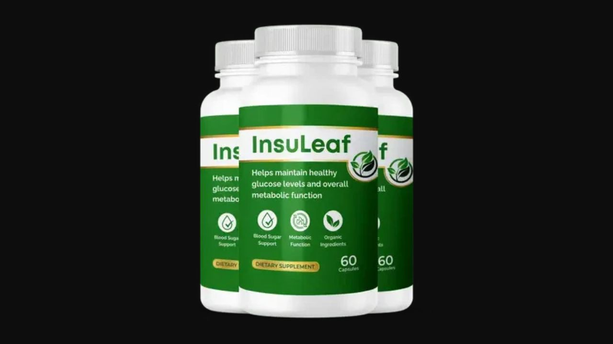

I analyzed all 13 ingredients across 6 biological pathways. Here's the honest truth about what this blood sugar formula does — and what real users in their 40s, 50s, and 60s are experiencing.
▶ Watch our full InsuLeaf video review before buying
InsuLeaf stands out in the blood sugar supplement category by attacking the problem from 6 distinct biological angles simultaneously — insulin sensitivity, glucose absorption, cellular uptake, antioxidant protection, craving reduction, and metabolic rate. Most blood sugar supplements use 1-3 of these mechanisms. The 13-ingredient formula targeting all 6 is a meaningfully more comprehensive approach, backed by ingredients with established research records. The 60-day guarantee provides sufficient evaluation time for the formula to work.
InsuLeaf is a daily blood sugar support supplement — 2 capsules with your largest meal — containing 13 plant-based ingredients, essential minerals, and antioxidants. It was formulated to address blood sugar management from multiple biological directions simultaneously, rather than relying on a single mechanism like most standalone chromium or cinnamon supplements.
Manufactured in an FDA-registered, GMP-certified facility in the USA. Non-GMO, gluten-free, vegan-friendly, no synthetic stimulants or additives.

Blood sugar instability is not a single-cause problem. It involves multiple interconnected biological failures. InsuLeaf targets all six simultaneously:
Chromium, ALA, Cinnamon
White Mulberry, Gymnema, Bitter Melon
Banaba Leaf (corosolic acid), Chromium
Alpha Lipoic Acid, Juniper Berry
Gymnema Sylvestre, Licorice Root
Cayenne, Guggul, Taurine
Chromium is an essential cofactor for insulin function. At 217% DV in chelated (highly bioavailable) form, InsuLeaf delivers a clinically meaningful dose that improves the body's insulin response efficiency. Chromium deficiency — extremely common in modern processed-food diets — directly causes insulin resistance. Supplementing restores the insulin sensitivity that deficiency had undermined.
Gymnemic acids temporarily block sweet taste perception, reducing sugar cravings at the sensory level, while simultaneously slowing glucose absorption from the digestive tract into the bloodstream. Decades of research confirm Gymnema's dual action on blood sugar.
Methylhydroxy chalcone polymer (MHCP) in cinnamon mimics insulin signaling in cells — activating glucose uptake pathways independently of insulin. Multiple meta-analyses confirm cinnamon supplementation reduces fasting blood glucose and improves insulin sensitivity.
Contains charantin and polypeptide-P — compounds that improve glucose utilization in cells by activating GLUT4 transporters. Bitter melon is one of the most extensively studied botanicals for blood sugar support in traditional Asian and Ayurvedic medicine.
A mitochondrial antioxidant that both protects pancreatic beta cells from oxidative damage and directly improves insulin sensitivity through AMPK activation. ALA addresses the oxidative stress component of metabolic dysfunction that other blood sugar ingredients don't target.
Corosolic acid from banaba leaf facilitates glucose transport into cells by activating GLUT4 carriers — a mechanism that works independently of insulin. Studies show meaningful reductions in post-meal blood glucose with banaba supplementation.
"I was skeptical at first, but I wanted a natural way to support healthy blood sugar. About a month in, I felt more energized and noticed fewer cravings for sweets. It's simple — just two capsules a day — and the 60-day guarantee gave me peace of mind."
"After about a month of consistent use, I began noticing changes. By the second month, my afternoons no longer felt like a crash zone. I like that it's made with natural ingredients and manufactured in the USA. InsuLeaf is steady, reliable support I can feel good about."
"My blood sugar is stable and my energy is consistent throughout the day. I've tried other supplements but InsuLeaf is the first one where I genuinely feel the difference. The 6-bottle package was the right decision — the results keep improving with consistent use."
60-Day Guarantee · 13 Ingredients · 6 Pathways · FDA-Registered Facility
→ Visit Official InsuLeaf Website60-Day Guarantee · 13 Ingredients · 6 Pathways · Free Shipping on 3+
→ Get InsuLeaf at the Official PriceAffiliate Disclosure: This review contains affiliate links. We may earn a commission at no additional cost to you. See our Affiliate Disclosure. Not evaluated by the FDA. Not intended to diagnose, treat, cure, or prevent any disease.